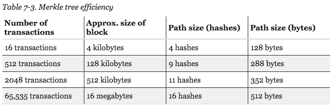

Merkle Trees
An efficient and verifiable data structure
Merkle trees have become increasingly prevalent due to their key role in many decentralised systems. Although we are rarely exposed to them directly, they are worth studying for their elegance alone.
Hash Functions
A hash function is a mathematical function which maps anything (represented as a finite string of characters) into an output of fixed length.
This is tremendously useful. Any data has a signature that is significantly smaller than itself.
This signature can be used to verify the integrity of data downloaded from potentially dubious sources. Some sites will show the hash for files so that users can check whether the file has been tempered with.
This highlights a key characteristic of hash functions. It must be nearly impossible to modify a file to obtain a different file with the same hash (a hash collision).
Properties of hash functions:
- their input can be of any size
- their output is of fixed-size e.g: 256-bit
- they are efficiently computable for an input of size n, its hash can be computed in O(n) time
Cryptographic Hash Functions
Since Merkle trees are primarily used in settings where cryptography matters, our hash functions will have to abide by the following (stronger) properties:
Collision Resistance
A collision occurs when two distinct inputs produce the same output:
A hash function is collision resistant if nobody can find a collision.
It is worth noting that "nobody can find" does not equate to "does not exist". In fact, collisions do exist because the input space is larger than the output space. the input space is infinite whereas the output space is finite
This can be shown using the pigeon-hole principle , which states that if n+1 pigeons must inhabit n pigeon-holes, at least one pigeon-hole must have more than one pigeon inhabitant.
Using the pigeon-hole principle, we can formulate a process which is guaranteed to find a collision:
Consider a hash function with a 256-bit output size. Pick 2256+1 distinct values and calculate their respective hashes. Since we picked more values than possible outputs, we are guaranteed that some pair collides when you apply the hash function.
This method guarantees that we will cause a collision. We can reduce the number of values to examine while still being fairly likely to observe a collision by making use of the birthday paradox in a cryptographic setting (known as a birthday attack). By examining the hashes of 2130+1 randomly chosen inputs, there is a 99.8 percent chance of finding a collision.
This method of uncovering hash collisions works for every hash function but takes an impractical amount of time. It would likely take far longer than the age of the universe to find a collision using all the computing power available on earth. Bitcoin and Cryptocurrency Technologies. Princeton University Press, p.4
For some hash functions, it it easy to produce collisions. Consider the following hash function:
H(x) = x mod 2256
This function returns the last 256 bits of the input (a fixed-size output). It is trivial to find two values that have the same 256 bit ending. 5 and 5 + 2256 would cause a collision for example.
We don't know whether such methods exist for other hash methods (e.g SHA512). The general consensus is that these functions are suspected to be collision resistant but no formal proof has ever been made. The hash functions we rely on today have been tested thoroughly by mathematicians and no collision has been found. Occasionally, collisions are found after years of work and particular functions are phased out of cryptographic systems. such was the fate of MD5
Hiding
The second property our cryptographic hashes must abide by: given a hash output, it should be impossible to deduce its input.
With y = H(x), x can't be deduced from y.
When the set of potential inputs is fairly restricted, this can be hard. Imagine a problem where you output true or false. You then hash the result of the problem. An attacker can deduce whether the output was true or false by computing the hashes of those inputs on his own.
In a sense, we want the hash input, x to be taken from a set that is very spread out. It turns out we can hide even an input that is not spread out by concatenating it with another input that is spread out.
A hash function H is said to be hiding if when a secret value r is chosen from a probability distribution that has high min-entropy, then, given H(r || x), it is infeasible to find x. where || denotes concatenation
Puzzle Friendliness
Lastly, we require hash functions to be puzzle friendly. This property is the least intuitive of the three.
A hash function H is said to be puzzle friendly if for ever every possible n-bit output value, if k is chosen from a distribution with high min-entropy, then it is infeasible to find x such that H(k || x) = y in time significantly less than 2n.
In more concrete terms, if someone wants to have the hash function output Z and part of the input(k) has been chosen in a suitably random way, then it's very difficult to find the value x that makes the hash function output Z.
An example: SHA-256
Having examined the properties of cryptographic hash functions, let's take a look at a commonly used one: SHA-256
SHA-256 outputs 256-bit hashes and works by using the Merkle-Damgård transform to convert the underlying fixed-length collision-resistant hash function the compression function into one that accepts arbitrary-length inputs.
The input is padded so that its length is a multiple of 512 bits. It can then be divided into the n message block and processed as shown in the figure above.
Recapitulative
The hash serves as a fixed-length summary, or unambiguous signature, of a message. It gives us an efficient way to remember things we've seen before and to recognise them again. Whereas an entire file could have been hundreds-of-gigabytes in size, its hash is of fixed length (256 bits in our examples). This greatly reduces storage requirements and enables a great number of practical uses.
It is worth noting that different applications of hash functions require varying properties. Although puzzle-friendliness might be required in cryptocurrency systems, it isn't for other applications.
Hash Pointers
A Hash Pointer is a data-structure that points to data along with a cryptographic hash of the data. In addition to enabling information retrieval, hash pointers can be used to verify the integrity of the data.
Block Chains
A block chain is a linked list that is built with hash pointers. It is a tamper-evident log because changes to the chain will cause detectable inconsistencies between a data block and the hash pointer to the data block (which cascades right through to the head pointer).
Merkle Trees
Ralph Merkle had the idea to combine binary trees and hash pointers to create the Merkle tree in 1979. The leaves contain hash pointers (arranged in pairs) and the hash of each of these blocks is stored in the parent node.
We only need to store the root of the tree to verify the integrity of the tree. As in the block chain example, a change at the leaf-level would induce a change to hashes that bubbles up all the way to the root node, effectively making the data-structure tamper-proof.
The merkle tree improves over the block chain by enabling concise proof of membership. That is, it is efficient to figure out whether a data block is a member of the Merkle Tree.  Merkle tree efficiency in Bitcoin - Source
Proving that a data block is included in the tree only requires showing the blocks in the path from that data block to the root.
If there are n nodes in the tree, only about log(n) items need to be shown. Even with large Merkle trees, we can prove membership in a relatively short time. The space and time requirements are of the order log(n). whereas they are of the order n for block chains
Uses of Merkle Trees
Git
The version control system uses Merkle Trees to see which files changed in the tracked directory.
Bitcoin
Merkle Trees are used to summarise all the transactions in a particular block, thus providing an efficient way to verify whether a transaction is included in a block.
Databases
Apache Cassandra, Dynamo and other NoSQL databases use Merkle trees to detect inconsistencies between replicas of databases. Source
Merkle trees are very commonly used to achieve consensus in distributed systems (e.g: IPFS uses a Merkle-DAG , BitTorrent, dat) or to counter data degradation (e.g: ZFS).
Further Reading
- Traditional Merkle trees cannot be applied to graphs because graphs are more complicated than trees. This paper from Ashish Kundu IBM T J Watson Research Center and Elisa Bertino Department of Computer Science and CERIAS, Purdue University expands on the subject: On Hashing Graphs
- Merkle Tree Traversal in Log Space and Time by Michael Szydlo RSA Laboratories presents a technique to efficiently traverse Merkle trees.
- The Swirlds Hashgraph Consensus Algorithm: Fair, Fast, Byzantine Fault Tolerance by Leemon Baird presents a different hash graph data-structure.